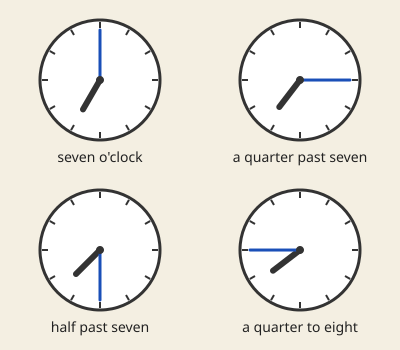

Wie spät ist es?
Mit einem KI-Tutor lernen
Ein KI-Tutor erklärt dir diese Seite und hilft dir bei den Aufgaben. Wähl deinen Assistenten:
Mit Claude öffnen Mit ChatGPT öffnen Mit Mistral Vibe öffnen
Du nutzt dein eigenes Konto beim Anbieter. Der Assistent ist kein Angebot von lernapps.net: lernapps liefert nur Inhalte und Aufgaben. Die Wahl gilt für alle Seiten, nur auf diesem Gerät.
Amir fragt nach der Uhrzeit
Die Pause ist fast zu Ende. Amir schaut auf die Wanduhr und fragt „What time is it?“. Sophie antwortet. Dafür braucht sie die Uhrzeit auf Englisch.
Das kannst du danach: Die Uhrzeit auf Englisch sagen, nach ihr fragen und eine Uhr auf eine genannte Zeit stellen.
Aufgabe
Lösung
It's seven o'clock. richtige Antwort
O'clock heißt „Uhr“ und steht nur bei vollen Stunden.
It's half past seven.
Half past seven ist 7:30, eine halbe Stunde nach sieben.
It's a quarter to seven.
A quarter to seven ist 6:45, also eine Viertelstunde vor sieben.
Bei einer vollen Stunde sagst du die Zahl und o'clock.
Past, to und die Uhr
Die Uhrzeit hat zwei Hälften. Bis halb sagst du past (nach), danach to (vor). Die Stunde, die du nennst, ist bei past die, die schon vorbei ist, und bei to die, die als nächste kommt.

Unter jeder Uhr steht, wie man die Zeit auf Englisch sagt. Der lange blaue Zeiger zeigt die Minuten, der kurze schwarze die Stunde.
Quelle: eigene Zeichnung. Lizenz: CC-BY-4.0.| Ausdruck | Bedeutung |
|---|---|
| What time is it? | Wie spät ist es? |
| It's seven o'clock. | Es ist sieben Uhr. |
| It's ten past seven. | Es ist zehn nach sieben. |
| It's a quarter past seven. | Es ist Viertel nach sieben. |
| It's half past seven. | Es ist halb acht (7:30). |
| It's twenty to eight. | Es ist zwanzig vor acht. |
| It's a quarter to eight. | Es ist Viertel vor acht. |
| Minuten | Englisch |
|---|---|
| 5 | five past |
| 10 | ten past |
| 15 | a quarter past |
| 20 | twenty past |
| 25 | twenty-five past |
| 30 | half past |
| 35 | twenty-five to (die nächste Stunde) |
| 40 | twenty to (die nächste Stunde) |
| 45 | a quarter to (die nächste Stunde) |
| 50 | ten to (die nächste Stunde) |
| 55 | five to (die nächste Stunde) |
Merke
Half past seven ist 7:30. Im Deutschen sagst du dafür „halb acht“ und zählst von der nächsten Stunde aus. Im Englischen zählst du von der vollen Stunde aus: eine halbe Stunde nach sieben. „Half seven“ gibt es nicht. Bei to nennst du die Stunde, die kommt: 7:45 ist a quarter to eight.
| Uhrzeit | Das sagst du |
|---|---|
| 8:45 Schulbeginn | a quarter to nine |
| 11:45 Sport | a quarter to twelve |
| 12:45 Mittagessen | a quarter to one |
| 15:15 Schulschluss | a quarter past three |
Übung
Aufgabe Nr. 1
Aufgabe Nr. 1
Stelle die Uhr auf: eight o'clock.
Lösung
8:00 Uhr: eight o'clock
Aufgabe
Lösung
Richtige Antwort: a quarter past three – 3:15; a quarter to three – 2:45; half past three – 3:30; five to three – 2:55
Bei past kommt die Minute nach der Stunde, bei to vor der nächsten Stunde. Five to three ist darum 2:55.
Aufgabe
Wie sagt Sophie die Uhrzeit? Schreibe den ganzen Satz.
- Es ist 7:00 Uhr.
- Es ist 7:30 Uhr.
- Es ist 7:45 Uhr.
- Es ist 7:15 Uhr.
- Wie spät ist es?
Lösung
- It's seven o'clock.
- It's half past seven.
- It's a quarter to eight.
- It's a quarter past seven.
- What time is it?
Aufgabe
Hör zu und schreibe, was Sophie sagt.
- KI
- KI
- KI
Lösung
- It's half past seven.
- It's a quarter to eight.
- It's ten past five.
Selbst sagen und schreiben
Aufgabe
Hör zu, sprich nach und nimm dich auf. Vergleiche dann mit dem Original.
Tipp
Hör das Beispiel zuerst. Sprich dann langsam nach und vergleiche deine Aufnahme mit dem Original.
- What time is it?KI
- It's half past seven.KI
- It's a quarter to eight.KI
Zum Aufnehmen braucht diese Aufgabe JavaScript. Die Beispiele kannst du auch ohne anhören.
Lösung
- What time is it?
- It's half past seven.
- It's a quarter to eight.
Offene Aufgabe
Amir fragt „What time is it?“. Die Uhr zeigt 4:45. Schreibe, was Sophie sagt, und dann, was sie um 4:00 Uhr sagen würde.
Eine gute Antwort enthält:
Lösung
It's a quarter to five. It's four o'clock.
Wie es weitergeht
Sophie trägt die Uhrzeiten in ihren Schulkalender ein. Als Nächstes fehlen die Tage und Monate. Auf der nächsten Seite lernst du das Datum.
Fehler gefunden oder eine Idee für diese App?